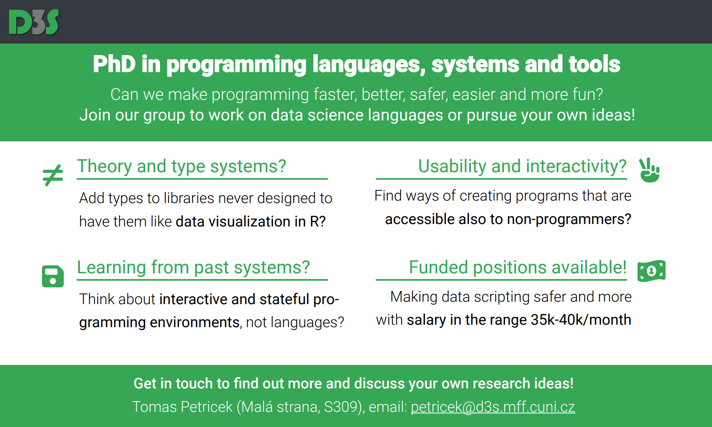
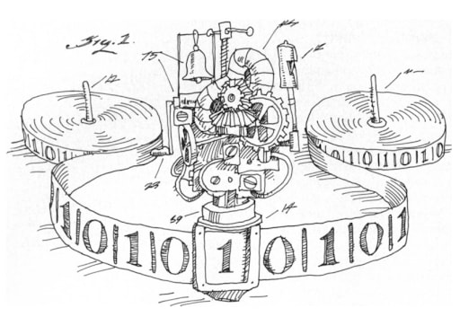

NPRG077
Write your own tiny
programming system(s)!
Tomáš Petříček, 309 (3rd floor)
petricek@d3s.mff.cuni.cz
https://tomasp.net | @tomaspetricek
https://d3s.mff.cuni.cz/teaching/nprg077


Introduction
Why such a strange course?
Where I'm coming from?
-
PhD, University of Cambridge
Context-aware programming languages -
Microsoft Research Cambridge
F# and applied functional programming -
The Alan Turing Institute, London
Expert and non-expert tools for data science -
University of Kent, Canterbury
History and programming systems

Demo
Coeffects playground
Did this to get my PhD...
How to show potential uses of theoretical work?
Tiny type system running in the web browser
Tiny demos of two potential applications

Programming Languages
Programming is
writing code
Formal semantics, implementation, paradigms, types
We know how
to study this!

Programming Systems
Interacting with a stateful system
Feedback, liveness, interactive user interfaces
But how do we
study this?

Demo
The Gamma project
Making programmatic data exploration accessible to non-programmers
From language to system
Small typed language
Interaction is the key.
This is why it works!
Paradigm shift in 1990s

From systems to languages
- From running system to code
- From state & interaction to semantics
- Incommensurable ways of thinking!
History of science matters!
- How did we get where we are?
- What ideas got lost along the way?
- How to recover them?
Research
What do I work on today?
- History and philosophy of computing
- Programming languages, types and theory
- Interactive programming environments
- Will artificial intelligence make me obsolete?
Programming languages at D3S

Growing group of great people
- Jan Vitek (via Northeastern)
- Aleksander Boruch-Gruszecki
- Also talking to PRL-PRG at CTU!
Growing number of activities!
- Programming languages reading group
- New courses (NSWI182, NPRG075, NPRG077)
- PL topics at the regular D3S seminar

Starting points
Writing tiny systems
Two uses of tiny systems
Education
Best way to learn?
Write it on your own!
Understand principles
As well as subtle details
I hope you'll have fun!
Doing more with less?
Research
Imagine new paradigms
Variable names
Focus on interaction
How exactly did it work
Ignore practical details
New mode of interaction

Teaching tiny systems
(Kamin, 1990)
Used in multiple
courses worldwide
Examples in Pascal
Languages covered are APL, Clu, LISP, Prolog, Smalltalk, Scheme, SASL
Not always focused
on the key aspect

Tiny systems and AI
(Schank, Riesbeck, 1981)
Miniature implementations of 5 Yale AI lab programs
Faster, more efficient, easier to understand, modify and extend
"Miniatures, demos and artworks" by Warren Sack

Tiny systems and ML
(Distill, 2016-2021)
Five affordances of interactive articles
Connecting people & data
Making systems playful
Prompting self-reflection
Personalizing reading
Reducing cognitive load
Programming models
Learning by implementing
Programming models
Language paradigms
- Functional programming
- Imperative programming
- Object-oriented programming
- Logic programming
Programming models
System interaction
-
Image-based programming model
Programming system is always running -
Interactive and live programming
System provides continuous feedback -
Incremental or reactive evaluation
Recompute on edit or when new data come
Demo
Logic programming in Prolog
Demo
Object-orientation in Smalltalk
What really matters?
Static structure
- Source code of the program
- What you have at the start
Dynamic structure
- Runtime data structures
- What else do you need to run
Logic of evaluation
- How the dynamic state evolves?
(* A term like 'father(william, X)'
consists of predicate 'father',
atom 'william' and variable 'X' *)
type Term =
| Atom of string
| Variable of string
| Predicate of string * Term list
(* A rule 'head(...) :- body.' *)
type Rule =
{ Head : Term
Body : Term list }
(* A program is a list of rules *)
type Program = Rule list
Why interpreters?
A good way to explain the structures!
Functional data types for the static and dynamic structure
A function to model the evaluation logic

Operational semantics
Standard approach
to programming language theory
Equations vs. Code
Code actually runs!
Easier to write?
Course scope
What is not covered?
- Syntax choices and writing parsers
- Compilation and JIT-based runtimes
- Formal semantics and correctness
- Supporting real-world use cases
Tiny systems
Programming systems research
Academic research
What are we trying to study?
- Basic essential principles
- In isolation from other factors
- You have to ignore a lot!
What to ignore in programming?
- Efficient implementation?
- Wide-spread user adoption?
- User interface of editor tools?

Programming language theory
Ignore implementation and practical features
Prove that the core idea is formally sound

Human-computer interaction (HCI)
Ignore inner working and implementation
Show that users can actually use it and how

Performance evaluation
Ignore usability and design implications
Show that you can do better than a baseline
Tiny systems
What can we study?
- Can talk about stateful interactive systems
- Implement key aspects of inner working
- Reconstruct interesting past systems
- But cannot be printed on 12 pages of A4

Demo
C64 BASIC
Why study universally disliked programming language?
Somehow allowed everyone to program!
Interesting mode of interaction!
Course background
Getting started with F#
The F# programming language

What is F# about?
- Functional-first based on OCaml
- Great interop with .NET and JS
- Open-source (MIT) with team in Prague!
Who uses F# for what?
- Consultancies for full-stack web dev
- Finance and insurance companies for modelling
- TU Kaiserslautern for systems biology
- Success stories like Jet.com
Why F#?
Building tiny programming systems
- Algebraic data types for structure modelling
- Mostly functional is great for logic
- Runs everywhere & has nice tools
- I like the language and can help you!
Demo
First look at F#

Elmish architecture
Functional interactive user interface development
Types for application
State and user Event
Functions to render
and update state
Demo
Building a TODO list in F#
Closing
Write your own tiny system
Practical details
Course structure
- Videos + bi-weekly hands-on labs
- Watch before & finish after!
- Remote possible - email me
- Check the schedule on course web site!
To get the credits
- Active participation in the labs
- Awarded based on a git repo
- Complete basic tasks for 4/6 systems
Conclusions
Write your own tiny programming system(s)!
- Learn interesting programming models!
- Nice programming research methodology
- We have projects and PhD positions available :-)
Tomáš Petříček, 309 (3rd floor)
petricek@d3s.mff.cuni.cz
https://tomasp.net | @tomaspetricek
https://d3s.mff.cuni.cz/teaching/nprg077
References
Tiny system examples
- Coeffects: Context-aware programming languages
- The Gamma: Democratizing data science
- The Lost Ways of Programming: Commodore 64 BASIC
Starting points
- Ingalls, D. (2020). The Smalltalk Zoo: Smalltalk-78 (NoteTaker)
- Hohman, F. et al. (2020). Communicating with Interactive Articles
- Schank, R. C., Riesbeck, C. K. (1981). Inside Computer Understanding Five Programs Plus Miniatures
- Kamin, S. (1990) Programming languages: an interpreter-based approach. Addison-Wesley.
- Kamin, S. (1990) PLIBA source code mirror on GitHub
- Sack. W. (2020). Miniatures, Demos and Artworks: Three
Kinds of Computer Program, Their Uses and Abuses